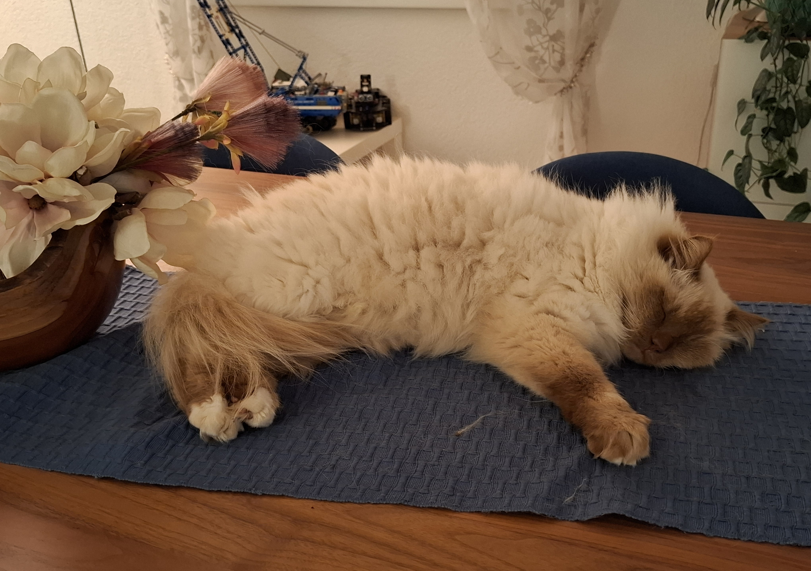
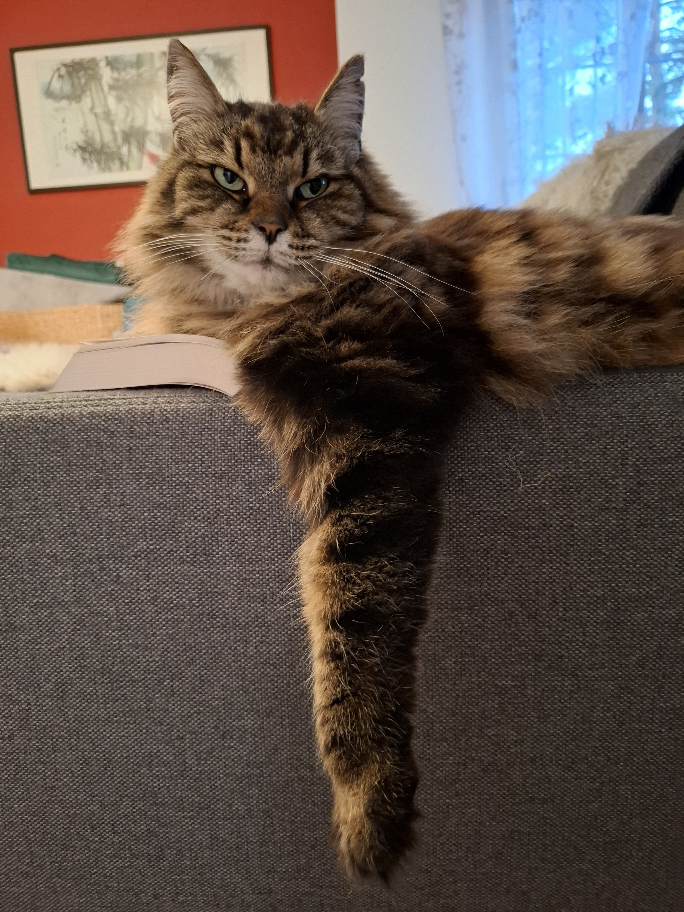

Nevis
Yuna
Nevis ist eine sehr freunliche Katze. Er hat noch nie jemanden gebissen oder gekratzt. Nevis heisst übersetzt "Schneeweiss". Der Name passt also gut zu seinem Fell. Normalerweise ist er fast die ganze Zeit draussen am Revier markieren oder am Erkunden und kommt manchmal schnell rein um zu essen und dann geht er wieder raus, aber am Abend schläft er immer auf unserem Tisch im Wohnzimmer.
Yuna ist auch freundlich aber sie ist sehr schreckhaft, also wenn man sie erschrickt, dann kann sie schon mal beissen oder kratzen. Sie konzentriert sich sehr auf ihre Fellpflege und putzt sich fast die ganze Zeit. Sie liegt oft einfach irgendwo aber sie geht auch oft in den Garten. Sie hat schon viele Vögel und Mäuse gefangen und ein paar davon dann leider auch verzehrt.